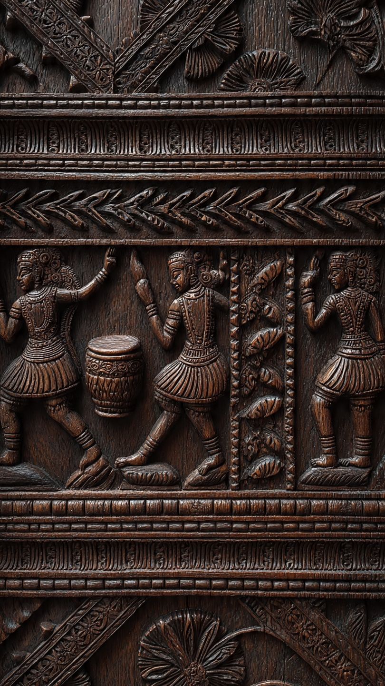
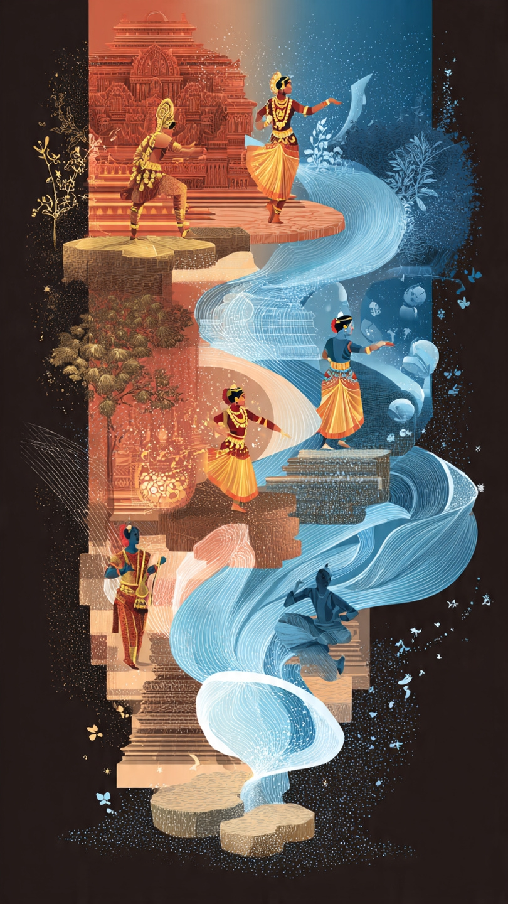
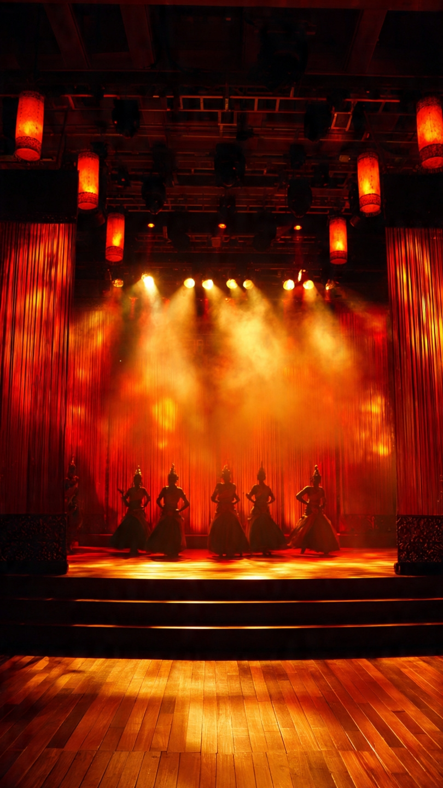
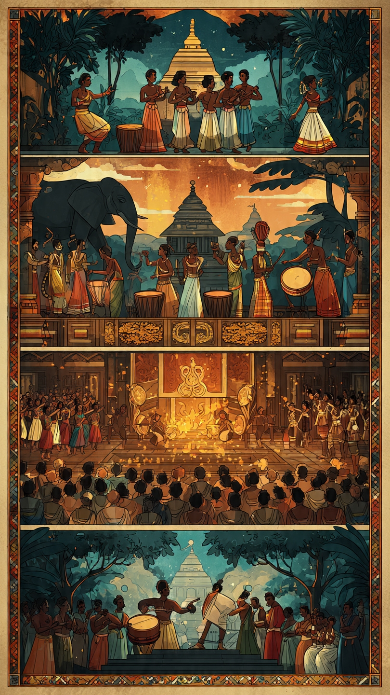
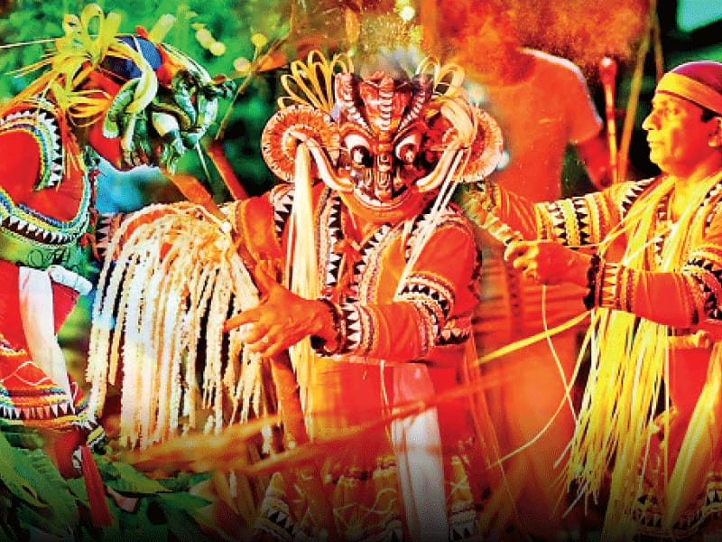
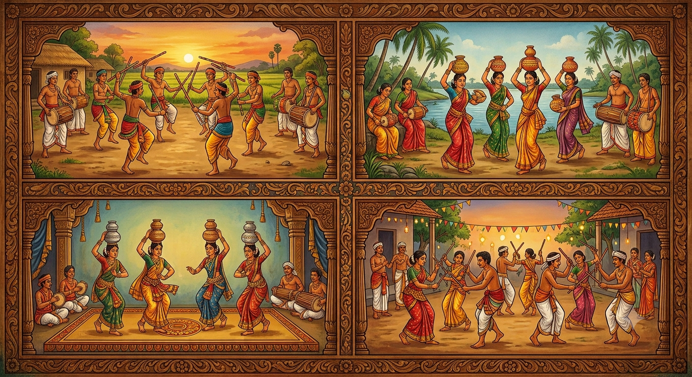

Dance Gallery

නර්තන කලාවේ ඉතිහාසය

නූතන ප්රවණතා

ආලෝකකරණය හා වේදිකාව

දේශීය වන්නම්

දේශීය ශාන්තිකර්ම

ගැමි නැටුම්

විදේශීය නැටුම්

Explore the history, traditions and beauty of dance from Sri Lanka and around the world.
Explore Dance StylesDance World යනු නර්තන කලාවේ ඉතිහාසය, සම්ප්රදායන් සහ නවීන නර්තන ශෛලීන් පිළිබඳ තොරතුරු ලබාදෙන වෙබ් අඩවියකි.
ශ්රී ලංකාවේ සාම්ප්රදායික නර්තන වල සිට ලෝකයේ විවිධ නර්තන ක්රම දක්වා නර්තනයේ සුන්දරත්වය මෙහිදී අධ්යයනය කළ හැක.
Welcome to Dance World. Here you can learn about different dance styles, famous dancers and the amazing world of dance.
ප්රාග් බෞද්ධ යුගයේ සිට මහනුවර යුගය තෙක් නර්තන කලාව විකාශනය සිදු වූ ආකාරය.
කොළඹ යුගයේ සිට අද්යතනය දක්වා නොයෙක් ක්ෂේත්ර ඔස්සෙ නර්තන කලාවේ සිදුවූ විකාශය.
ශාන්තිකර්ම රංග භූමියේ සිට අද්යතන ප්රාසාංගික වේදිකාව තෙක් සිදු වූ විකාශනය හා එහිදී ආලෝකකරණය භාවිත වූ අයුරු.
උඩරට,පහතරට,සබරගමු වන්නම් නිර්මාණය වුණු අයුරු හා අද්යතන වන්නම්.
උඩරට,පහතරට,සබරගමු යන සම්ප්රදායන් ත්රිත්වයටම අයත් කොහොඹා කංකාරිය, දෙවොල් මඩුව,පහන් මඩුව,වලියක් මංගල්ය,රිද්දි යාගය හෙවත් රට යකුම,කිරිමඩුව,සන්නියකුම හා බලි ශාන්තිකර්මය ආදිය පිළිබඳ තොරතුරු.
කළගෙඩි,ලී කෙළි,කුළු,මෝල්ගස් ආදී සිංහල ගැමි නැටුම් හා ඊට සමානකම් දක්වන චෙම්බු/සෙම්බු,කෝළාට්ටම්,සුළකු ආදී ද්රවිඩ ගැමි නැටුම් පිළිබඳව.
භරත,කථක්,කථකලි,මණිපුරි යන භාරතීය නර්තන සම්ප්රදායන්.
ශ්රී ලංකාවේ පටාචාරා,බැරිසිල් වැනි මුද්රා නාට්ය හා හංසවිල, ද නට් ක්රැකර්,නිදි කුමරිය වැනි බටහිර බැලේ නර්තන කලා කෘතීන් පිළිබඳව.






නර්තන කලාව පිළිබඳ තොරතුරු සහ දැනුම සොයාගන්න අප හා සම්බන්ධ වන්න.
📧 Email: danceworld@example.com
📞 Phone: +94 77 123 4567